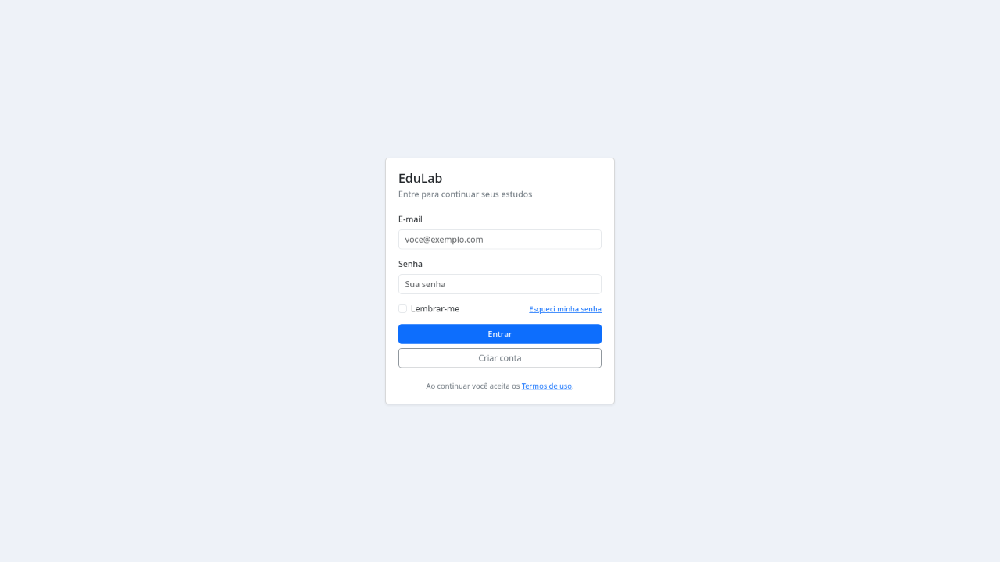
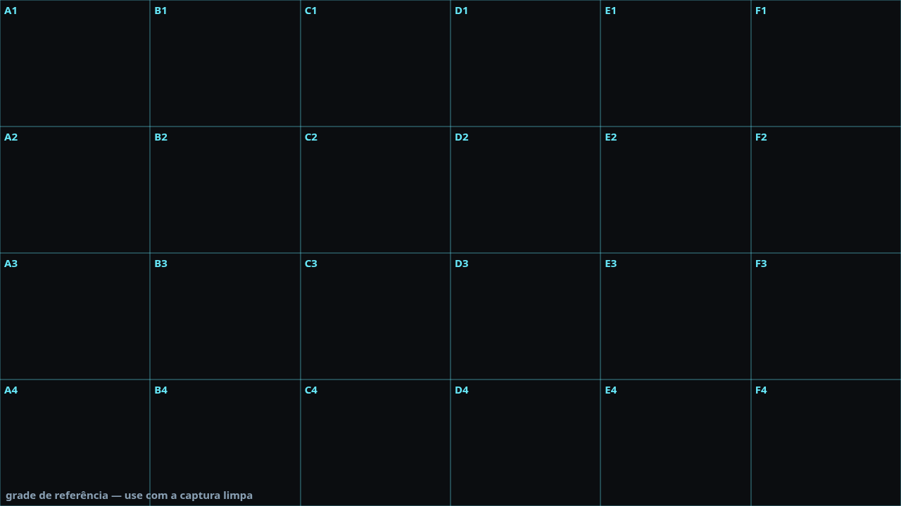
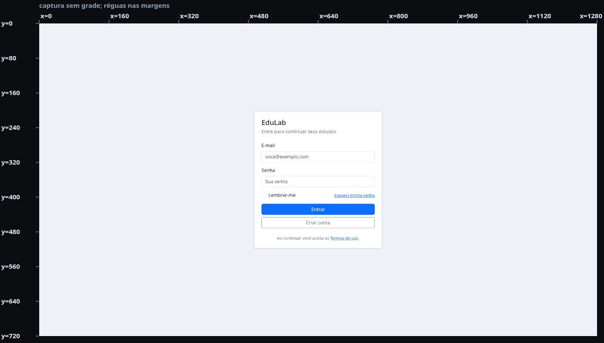
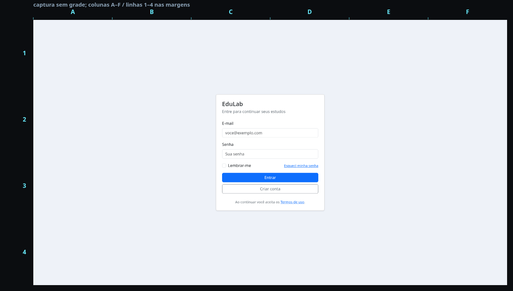
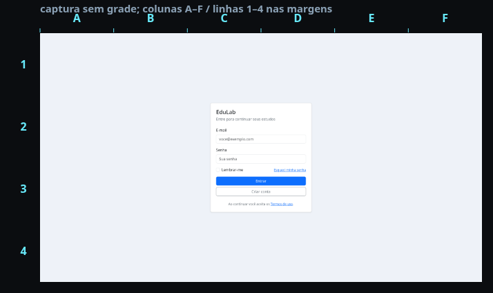

Matriz resolução × grade
22/10/2026 · vision-dataset@0.3.0 · 7 cenários · 30 tarefas · 1440 chamadas · $0,6455 · provedor fixado DeepInfra.
Quatro resoluções × quatro apresentações sem grade em cima do print. O ponto é remapeado para 1920×1080 antes de pontuar.
Melhor combinação1920 + plain71,1% · $0,0442
Melhor com grade1920 + sidecar70,0% · $0,0847
Melhor custo/qualidade1280 + plain68,9% · $0,0251
Placar por combinação
| combinação | MiMo | GLM | DeepSeek | média | custo |
|---|---|---|---|---|---|
| 1920×1080 + plain | 70,0% | 73,3% | 70,0% | 71,1% | $0,0442 |
| 1920×1080 + sidecar-grid | 73,3% | 70,0% | 66,7% | 70,0% | $0,0847 |
| 1280×720 + plain | 73,3% | 73,3% | 60,0% | 68,9% | $0,0251 |
| 1280×720 + sidecar-grid | 73,3% | 70,0% | 60,0% | 67,8% | $0,0432 |
| 960×540 + sidecar-grid | 70,0% | 56,7% | 50,0% | 58,9% | $0,0294 |
| 960×540 + frame-mark | 66,7% | 66,7% | 40,0% | 57,8% | $0,0301 |
| 960×540 + plain | 70,0% | 60,0% | 40,0% | 56,7% | $0,0180 |
| 1280×720 + frame-mark | 63,3% | 56,7% | 46,7% | 55,6% | $0,0363 |
| 960×540 + frame-axis | 66,7% | 46,7% | 53,3% | 55,6% | $0,0366 |
| 1280×720 + frame-axis | 73,3% | 16,7% | 66,7% | 52,2% | $0,0441 |
| 1920×1080 + frame-mark | 73,3% | 60,0% | 13,3% | 48,9% | $0,0629 |
| 1920×1080 + frame-axis | 73,3% | 30,0% | 10,0% | 37,8% | $0,0724 |
| 640×360 + sidecar-grid | 36,7% | 46,7% | 23,3% | 35,6% | $0,0257 |
| 640×360 + plain | 33,3% | 43,3% | 16,7% | 31,1% | $0,0195 |
| 640×360 + frame-mark | 36,7% | 36,7% | 13,3% | 28,9% | $0,0323 |
| 640×360 + frame-axis | 33,3% | 20,0% | 6,7% | 20,0% | $0,0412 |
Efeitos principais
| resolução | média |
|---|---|
| 1280×720 | 61,1% |
| 960×540 | 57,2% |
| 1920×1080 | 56,9% |
| 640×360 | 28,9% |
| grade | média |
|---|---|
| sidecar-grid | 58,1% |
| plain | 56,9% |
| frame-mark | 47,8% |
| frame-axis | 41,4% |
Escolha prática: 1080p + plain para qualidade; 1280p + plain para custo/qualidade; se a grade for obrigatória, 1080p + sidecar (nunca em cima do print). Moldura não compensa na média.
A moldura no 1080p gera 2070×1177 e parece sofrer resize extra do provedor; no 1280p o efeito muda de modelo para modelo (MiMo empata, DeepSeek sobe, GLM desaba). Não há ganho generalizável — e o absoluto em 640×360 é baixo demais para clique preciso.
Galeria





Arquivos
report.md · report.html · record.json · README · gerador · tutorial · ZIP do gerador
Limites: 30 tarefas, uma rodada por combinação, um provedor. Cada tarefa vale 3,3 p.p.; diferenças de 1–2 tarefas não separam combinações. Sem IC; conclusões direcionais.